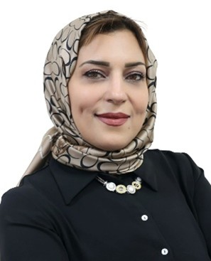

Session 1: Business & Sustainability in the Age of Digital Transformation
This session explores how digital transformation is reshaping business practices with a strong focus on sustainability. It brings together experts to discuss innovations in finance, marketing, and operations for sustainable growth. The session emphasizes the role of data analytics and digital technologies in improving efficiency and transparency. It highlights strategies for aligning business objectives with environmental and social responsibility.
Dr. Kaiss Redouane
Research Laboratory in Economics, Management, and Business Administration
Faculty of Economics and Management, Hassan 1st University, Settat, Morocco
Dr. Benjouid Zakaria
Research Laboratory in Economics, Management, and Business Administration
Faculty of Economics and Management, Hassan 1st University, Settat, Morocco
Dr. Amine Hmid
Hassan II University of Casablanca (Aïn Sebâa Campus), Morocco
✉️ amine.hmid1-etu@etu.univh2c.ma



Session 2: Latest Trends in Industrial Engineering & Smart Manufacturing
This session focuses on advancements in industrial engineering and smart manufacturing in the era of Industry 4.0. It covers topics such as automation, digital twins, predictive maintenance, and smart logistics. The session highlights data-driven optimization, real-time monitoring, and efficient production systems. It aims to promote sustainable and intelligent manufacturing practices for modern industries.
Dr. Neyara Radwan
Associate Professor
Industrial Management Department, Liwa University, Abu Dhabi, UAE
Mechanical Department, Faculty of Engineering, SCU, Egypt
Dr. Yazan Otoum
University of Ottawa and Algoma University, Canada
otoum@algomau.ca
Dr. Salman Saleem
Department of Mathematics, King Khalid University, Abha 61413, Saudi Arabia
saakhtar@kku.edu.sa


Session 3: Artificial Intelligence in Management: Transforming Organizations, Strategy, and Decision-Making
This special session focuses on the role of AI in transforming modern management and organizational practices. It covers AI-driven decision-making, business intelligence, and human–AI collaboration. The session highlights how AI enhances efficiency, innovation, and strategic planning. It also addresses ethical challenges, governance, and responsible AI adoption in organizations.
Prof. Dr. Valliappan Raju
Professor
FinTech Specialist | Research Leader | Academic Innovator
Gisma University of Applied Sciences GmbH, Germany
Prof. Dr. Tilmann Lindberg
Professor für Internationale Unternehmensführung
Gisma University of Applied Sciences GmbH, Germany
Dr. Mohammed Nazeh Alimam
Adjunct lecturer for Software Engineering, Software Quality Assurance, and Advanced Software Design
University of Europe for Applied Sciences, Germany

Session 4: Emerging Technologies & Innovation: Driving Digital Transformation and Sustainable Growth
This special session focuses on emerging technologies such as AI, IoT, and blockchain that are driving digital transformation and sustainable growth. It aims to bring together researchers and practitioners to explore innovation strategies, smart systems, and technology-driven entrepreneurship. The session highlights advancements in smart cities, cybersecurity, and green technologies. It provides insights into building sustainable and future-ready digital ecosystems.
Dr. Hind Hammouch
Professor
Economics and Management
Sidi Mohamed Ben Abdellah University
Morocco


Session 5: Intelligent Computing and Data-Driven Informatics for Next-Generation Systems
This special session focuses on emerging advancements in intelligent computing and data-driven informatics that are shaping next-generation digital ecosystems. The session invites contributions addressing innovative methodologies, models, and applications in areas such as artificial intelligence, machine learning, data analytics, cloud and edge computing, and intelligent decision support systems. Emphasis is placed on interdisciplinary approaches that integrate computing paradigms with real-world problem-solving in domains like healthcare, smart cities, cybersecurity, and industrial automation. The session also aims to explore challenges related to scalability, data privacy, interpretability, and ethical considerations in intelligent systems. Researchers and practitioners are encouraged to present novel algorithms, frameworks, and case studies leveraging open datasets and reproducible research practices. By fostering collaboration between academia and industry, this session seeks to highlight transformative solutions that enhance efficiency, sustainability, and innovation in computing and informatics, ultimately contributing to the development of robust and intelligent digital infrastructures.
Dr. Shamim Akhtar
California State University, San Bernardino, Los Angeles
California, USA
Dr. Ghulam E Mustafa Abro
Aarhus University
Denmark
Dr. Roise Uddin
Pacific States University
California, USA